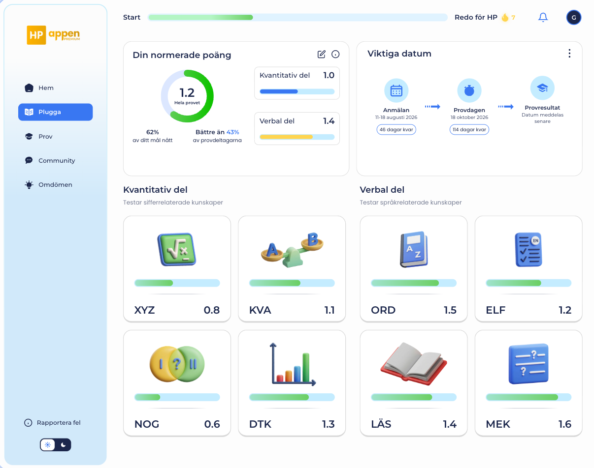
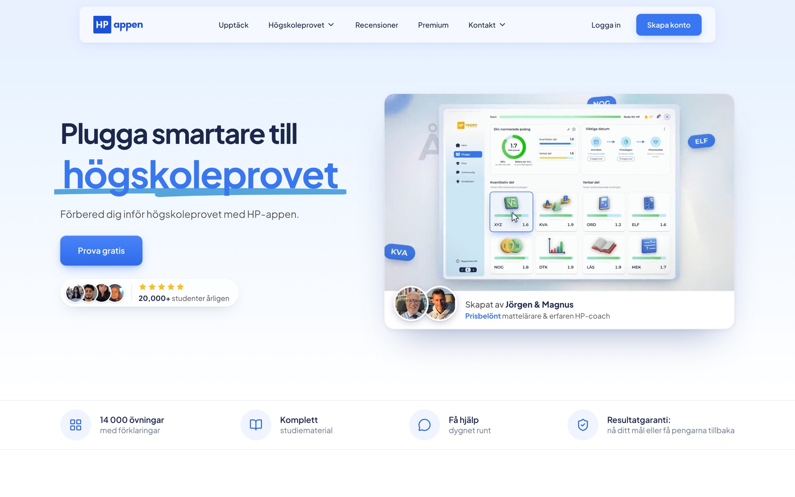

Overview
HP-appen 2.0 is the rebuilt platform that helps students prepare for Sweden’s högskoleprovet (university entrance exam). Built from user feedback and usage data, it introduces a new dashboard, a complete practise-simulate-analyse study loop, AI-powered help and community features — across desktop and mobile. As Head of Product, I led design and the frontend development team for every feature, turning user insights into shipped, measurable improvements that strengthened HP-appen’s position as a leading platform in the Swedish EdTech market.
My Role
Head of Product (UX Lead / Founding Designer until Dec 2025)
I led design and the frontend development team for every feature in HP-appen 2.0 — from research, flows and UI to shipped, tested React code — working hand in hand with the founders and the backend team. Beyond leading the team, I built many features from scratch myself using Claude Code.
Impact Highlights
- Conversion uplift 3% → 24%, generating approximately 10M SEK in seasonal revenue
- Serving 20,000+ students a year, with 9 in 10 premium users recommending HP-appen
- Sprint delivery time reduced by more than 50% through AI-native design-to-code workflows
- A design system of ~500 production components, shared across web, mobile web and marketing surfaces
- Quality at speed: 500+ unit-test suites and 17 end-to-end test suites guarding every release
Leading Design and Frontend as One Team
Instead of handing designs over a wall, I ran design and frontend as a single loop. Every feature moved from research and Figma flows straight into production components, with the same people owning both the experience and the code that ships it.
- Paired delivery: each feature shipped as matching frontend and backend changes, reviewed together so UX, API and data never drifted apart.
- AI-native workflow: Figma MCP, Claude and Lovable turned approved designs into working UI quickly, so reviews happened on real, clickable software rather than static frames.
- Safe rollouts: new features ship behind feature flags — live in staging, hidden in production — until they are tested and ready.
- Quality gates: unit tests, Cypress end-to-end tests and automated pull-request reviews on every change, plus product analytics to verify impact after launch.
- Mentoring: I set design and code standards, reviewed work and coached designers and developers on AI-assisted workflows.
Hands-On: Building Features with Claude Code
Leading the frontend team didn’t mean stepping away from the code. Using Claude Code, I designed and built a number of features end to end myself — from the Figma flow to production components, state management, edge cases and automated tests — and shipped them through the same review process as the rest of the team.
Leaderboard
- Two rankings with different motivations: Streakmästare for the longest daily study streaks, with streak milestones, and Pluggmaskiner for the most correct answers over the last 30 days.
- Infinite scroll with the student’s own position pinned in view whenever their row scrolls out of sight, so they always know where they stand.
- Encouraging empty states for students who aren’t ranked yet, and separate error handling for a failed list versus a failed next page, with inline retry.
Profile
- Avatars — upload a custom picture or pick a preset — saved to the account and synced across devices, with graceful fallbacks if an image can’t load.
- An anonymous display name and privacy toggles for the community, built to stay in sync even when settings are changed rapidly.
- Self-service account controls: reset all study data for a fresh start before a new exam, and delete account.
Building features myself kept me close to the real constraints of the codebase, made my design specs sharper, and let the team ship noticeably faster.
A Design System Built to Scale
HP-appen 2.0 runs on a unified design language built with atomic design — around 100 atoms, 160 molecules and 47 page-level organisms — so new features are assembled from proven parts instead of redrawn from scratch.
- Light and dark themes from a single set of tokens, switchable anywhere in the app.
- A 3D icon language for the eight test sections and community areas that makes a dense exam product feel friendly.
- Responsive by default: a sidebar navigation on desktop becomes a six-tab bottom bar on mobile (Home, Study, Analysis, Forum, Messages, References), tuned so labels never truncate.
- Installable web app: a web-app manifest, service worker and offline page let students add HP-appen to their home screen and keep working on patchy connections.
The Dashboard: “Am I on Track?”

Students preparing for högskoleprovet ask one question over and over: am I on track? The dashboard answers it in a single glance.
- Normalised score, live: a score ring on the 0.0–2.0 HP scale for the whole test (e.g. 1.2), with how much of the personal goal is reached and how the student compares to other test-takers.
- Quantitative vs. verbal: the two halves of the test side by side, each with its own score and progress bar.
- All eight sections as cards: XYZ, KVA, NOG, DTK, ORD, ELF, LÄS and MEK — each with a 3D icon, progress and score, so the weakest area is obvious and one tap away.
- Key dates: registration, test day and results as a timeline with live countdowns.
- Momentum: a “Start → Ready for HP” progress bar and a daily streak keep motivation visible without getting in the way.
Practice, Exams and Analysis
The core study loop is practise → simulate → analyse → focus, and each step got its own purpose-built experience.
- Exercises: single- and multi-question modes with instant grading and a teacher’s worked explanation — video or text — for every question.
- Exam simulation: every past exam with real timing, printable paper exam sheets for pen-and-paper practice, and automatic normalisation to the 0.0–2.0 scale straight after.
- Analysis: per-section results and trends so students know exactly what to study next.
- Study material: video lectures with progress tracking and structured study material for each section.
- Focus timer: a small, persistent timer that keeps running as students move between practice, material and the forum.
Features That Make Studying Stick
- AI tutor: a chat tutor students can type or talk to, with voice input and transcription, for help the moment they get stuck.
- Word training: focused vocabulary practice for ORD — the most-practised section — including students’ own word lists.
- Speed reading: timed reading sessions with fresh texts and comprehension checks to build pace for LÄS and ELF.
- Leaderboards: streak and study rankings that turn daily practice into friendly competition (built by me with Claude Code — see above).
- Survival mode (in development): a fast, game-like run of questions in Mixed, Verbal or Quantitative mode that ends on the first mistake.
- Community: a forum with discussion areas, mentions and reactions, plus private messaging — built so user content is never rendered as HTML, keeping it safe by design.
Growth Loops
- HP-prognosen: a free, no-account diagnostic that gives a predicted score and suggests where to start — the top of the funnel.
- Trials and checkout: free-trial invites and a Stripe checkout designed to make upgrading a clear, low-friction decision.
- Referrals: a referral programme with its own dashboard so students bring their friends.
- Onboarding: sign-up with Google, Apple or email in a single step.
hpappen.se — The Landing Page, 0 → 1
I led the end‑to‑end homepage creation — from discovery to deployment.
Key activities:
- Researched target learner mental models through interviews and surveys
- Conducted competitive analysis to identify differentiating UX and messaging gaps
- Defined a clear narrative: communicate value fast, lower cognitive load, and drive a single conversion path
The result: a homepage optimized for clarity and conversion, refined post‑launch via analytics (bounce, scroll depth, CTA CTR) and qualitative insights.
A page built around one decision
The landing page has a single job: get a stressed student to try the product. I structured the page as a guided argument — promise, proof, product, then a risk-free first step — so every section answers the next question a visitor has.
- Promise: a focused hero (“Plugga smartare till högskoleprovet”) with one primary CTA, Prova gratis, and a live product demo instead of a static mockup.
- Proof: social proof placed immediately under the fold — 20,000+ students a year, real score journeys from students (e.g. 1.25 → 1.8), and the creators’ credentials.
- Product: the four core features — Exercises, Mock exams, Personal analysis and Theory — each shown with real UI rather than illustrations.
- Risk-free first step: HP-prognosen, a free 13-question, 16-minute diagnostic with no account required, plus 10-question tests for each of the eight sections.

Making the content inventory tangible
HP-appen’s biggest advantage is depth, so the page makes it concrete: 14,260 exercises with worked solutions, 31 complete past exams from 2011 onwards, 133 video lessons and 20 text lessons, broken down per section (XYZ, KVA, NOG, DTK, ORD, LÄS, MEK, ELF). A results guarantee and transparent pricing close the loop on trust.
Designing AI-Integrated Learning Experiences
To enhance learning engagement, I co‑designed AI‑powered lectures and exercises that adapted automatically to learner performance.
- Personalized question sets and instant feedback loops
- Dynamic difficulty and adaptive pacing tied to learning outcomes
- User‑tested flows that reinforced trust and continuous skill growth
These AI‑enhanced flows became the platform’s core retention engine, tying directly to improved session duration and daily active learner growth.
The AI Coach — Always-On Exam Companion
Currently leading design for the AI coach, an assistant that guides learners through study planning, exam strategy, and in‑app navigation.
Process:
- Analyzed support data, usage logs, and interview transcripts to map user confusion points
- Defined conversational flows and tone of voice aligned with trust and guidance principles
- Iteratively measured usefulness, trust, and engagement metrics via structured feedback loops
As adoption grows, the AI Coach is emerging as a differentiating feature — a continuously learning, always‑available companion that increases engagement, confidence, and retention.
In Progress: Native Apps for iOS and Android
The next chapter is bringing HP-appen to the phone as native iOS and Android apps. I’m leading the design, building on everything the web product has taught us.
- Mobile-first study loop: short, satisfying practice sessions designed for the moments students actually have — on the bus, between classes, before bed.
- Platform-native feel: navigation, gestures and components that follow iOS and Android conventions rather than a wrapped website.
- Timely nudges: reminders for streaks, study goals and key dates like registration and test day.
- One design language: shared tokens and components with the web design system, so web and native evolve together instead of drifting apart.
The goal is simple: make it effortless to study a little every day, wherever students are.